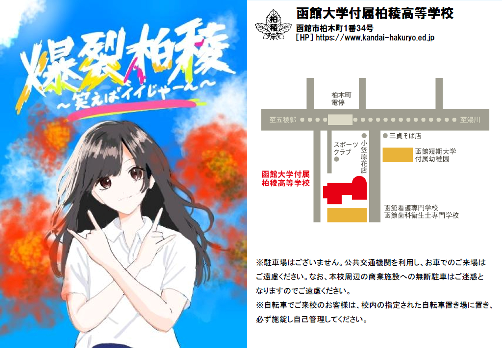
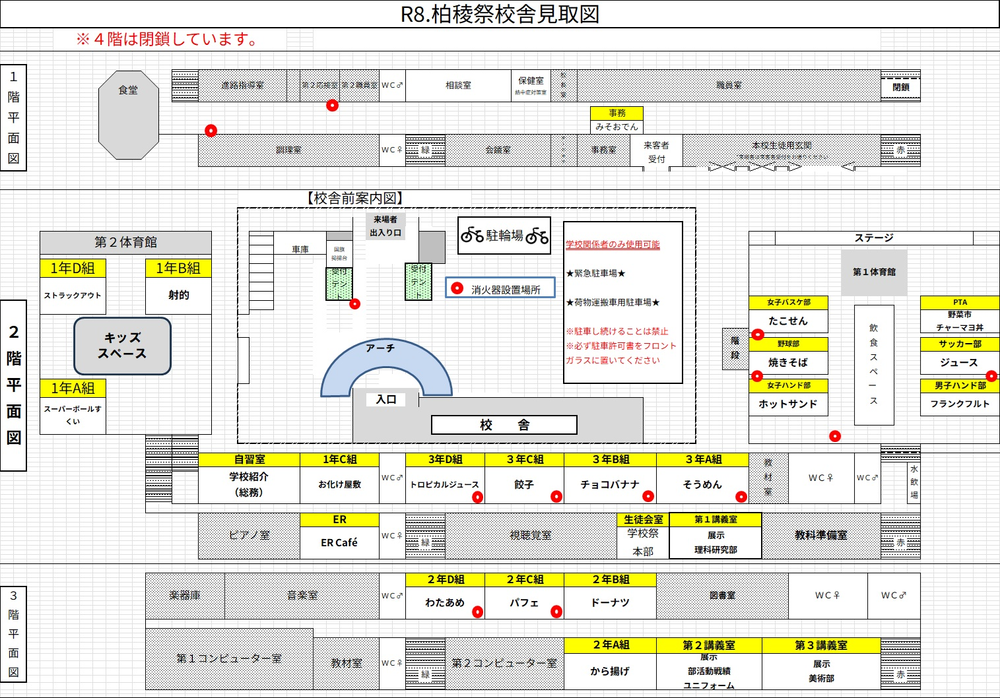

いよいよ、柏稜高校最大の行事、柏稜祭が始まります。
今年度のテーマは「爆裂柏稜～笑えばイイじゃーん～」です。
この柏稜祭には、クラス・クラブ・PTA による模擬店、ステージ発表等、生徒の皆さんが企画した様々なイベントが詰まっています。一人ひとりが存分に楽しむと同時に、ご来場くださった方々に柏稜生の本当の姿、本物のエネルギーを感じていただけるよう、心からのおもてなしをしましょう！
そして、この柏稜祭がみなさんにとって、最高の思い出、一生忘れることのない本当の思い出になることを祈っています！
ご来場の皆様方には、ぜひ、各クラス・クラブの催し物や展示をお楽しみいただき、柏稜生の Real を感じていただければ幸いです。
今年度の柏稜祭にご来場いただき、誠にありがとうございます。生徒会長として、こうして無事に皆さんと柏稜祭を迎えられる事を、大変嬉しく思います。第 67 回柏稜祭のテーマは
です。
みなさんは、この文化祭のためにクラスや部活内で何度も話し合い、様々な意見を出し合いながら、試行錯誤を繰り返しながら仲間と模擬店の準備に全力で取り組んできました。私自身その姿を校内のいたる所で目にして、今日という日をとても楽しみに待ち望んでいました。文化祭は、普段の学校生活ではなかなか味わえない特別な日です。準備してきた時間も含めて皆さんにとって忘れられない思い出になれる事を心から願っています。そしてたくさん笑って楽しんで頂きたいです。
最後になりますが、柏稜祭を開催するにあたってご協力してくださった先生方、保護者の皆様方、地域の方々、心より感謝を申し上げます。どうぞ柏稜生全員が、頑張って作り上げた柏稜祭をお楽しみください。
今から皆さんは、そうめんです。
甘くおいしいチョコバナナ★ カラフルトッピングで見た目もかわいく、写真映えも!!
餃子はグランメゾン 3-C にあり。餃子は万里を超える。
当日、お楽しみがあるよ～
めちゃめちゃおいしい物食べたい人カモーン！！
某ミ〇ドよりおいしいど～なっちゅです！たべにきてね～！
自分の好きなフルーツやソースを選択し、オリジナルパフェを作れます！
甘い大きいカラフルなわたあめ
すくえすぎて滅（当社比）
スーパーボールすくいをやってるとき、ビジュいいじゃん
１年 B 組の縁日は射的です。豪華景品も用意していますので、ぜひご参加ください。
とある柏稜高校の夜…。何かが起こるといわれている。この校舎で起きる謎は未だに誰にも解き明かされていない…。
的を倒すのだ。
『今年もやります野菜市！旬の新鮮野菜はもちろん、数量限定のアレが売っているかも！？
みんな大好き三色丼も！ぜひＰＴＡブースへお越しください！』
定番のさつま揚げやこんにゃくに、こだわりの自家製みそだれをたっぷり加え、心を込めて作る自慢のみそおでんです！
※ 今年度の柏稜祭ポスターは、３Ａ 木村 美月さん
柏稜祭テーマは、１年Ｃ組のみなさんの作品です。
パンフレットは、情報処理部の作品です
野球部が焼いた焼きそばいかがでしょうか。出来立てを提供できるように頑張ります。
毎年恒例となりました、女子ハンドボール部のホットサンドです！
大会参加費支払いのため、皆様たくさん買ってください！！
２年ぶりに復活！！ とっってもおいしい”たこせん”です！
待ってまーす♥
キンキンに冷えた最高の一杯をあなたに。
美味しいフランクフルト、食べにきて下さい！
冷たくて美味しいタピオカドリンクを、無料のクッキーと一緒にぜひ味わってみてください。
皆様に、ステキな演奏とステキな時間を届けられるように頑張ります～(^o^)！
高文連で受賞した作品と日々の活動を描いている作品を展示しています。来場をお待ちしています。
※ 一般の方の入場はできません
□一般公開
※4階は閉鎖しています。
